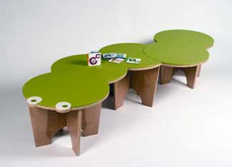

Looking for the best products to green your home? BuildingGreen’s annual Top 10 Green Building Products is a good place to start. Chosen by the editors of Environmental Building News and GreenSpec, the products will help you conserve resources through recycled materials, and achieve maximum energy efficiency through conservation of electricity and water. Here’s a look at a few of the winners:
High performance Alpen Fiberglass Windows from Alpen Energy Group push heat away in the summer while keeping it locked inside during winter months, resulting in less wasted energy and lower heating and cooling costs. The windows use suspended low-e films and coatings along with low-conductivity gas fills and spacers to reach an insulating value of R-20.
The 800 Series SHE98M Bosch Evolution Dishwasher from Bosch Home Appliances is 148 percent more energy efficient than the federal standard. This dishwasher can sense if a load is only slightly soiled and reduce the amount of water used, cutting energy use by about 20 percent.
The most common dishwashers in stores today heat water by routing it to a singular heat source. But the 800 Series saves energy by allowing the water to travel through a series of heating coils, helping it to heat more efficiently.
Greenplay Children’s Furniture from Skyline Design includes shelving, play spaces and tables made with environmentally safe materials such as post-consumer recycled plastic or sunflower hulls. All of the wood used for the furniture is certified sustainable by the Forest Stewardship Council. All paints used are low in volatile organic compounds (compounds used in conventional paints that decrease indoor air quality). When children outgrow the furniture, Skyline will take it back and recycle or donate it.
The new LR6 LED downlight from Lighting Fixtures offers more light per watt of power and better light quality than most compact fluores cents. LED bulbs last three to five times longer than compact fluores cents and contain no toxic mercury.
To learn more about these products and see the rest of the Top 10, visit BuildingGreen.
|
 SKYLINE DESIGN This award-winning kids’ furniture is made with eco-friendly materials. |
|
|